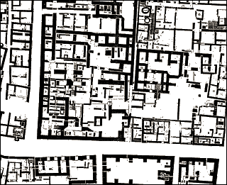

How do we know?One of the most characteristic features of an Indus Valley city is the organisation of streets. Archaeologists have found that it was common to have several wide streets running from north to south and from east to west through the city. 
Detail from a street plan of Mohenjo-daro Smaller streets and alleys ran off the main roads. The doorways which have been found generally open onto these alleyways rather than the main roads. |